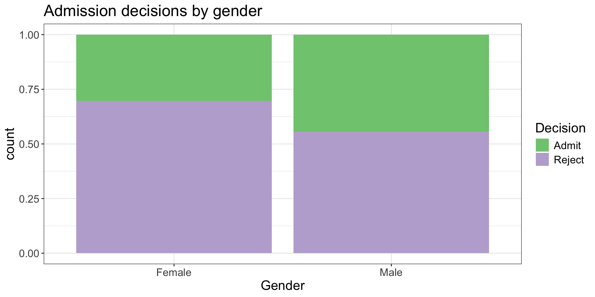
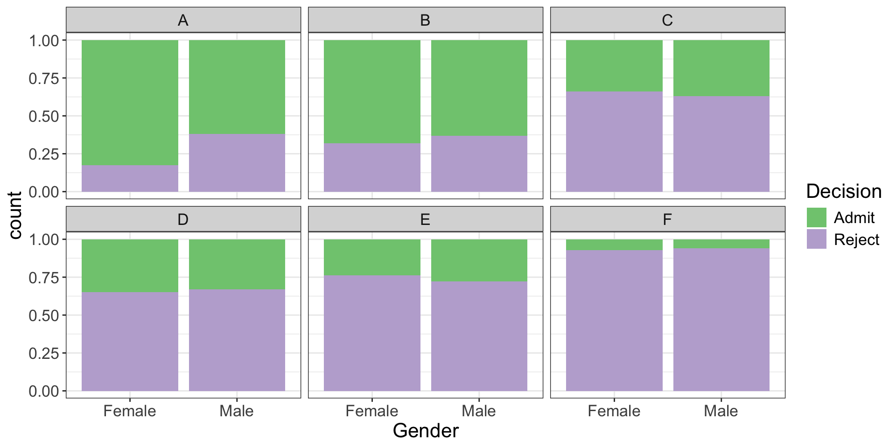
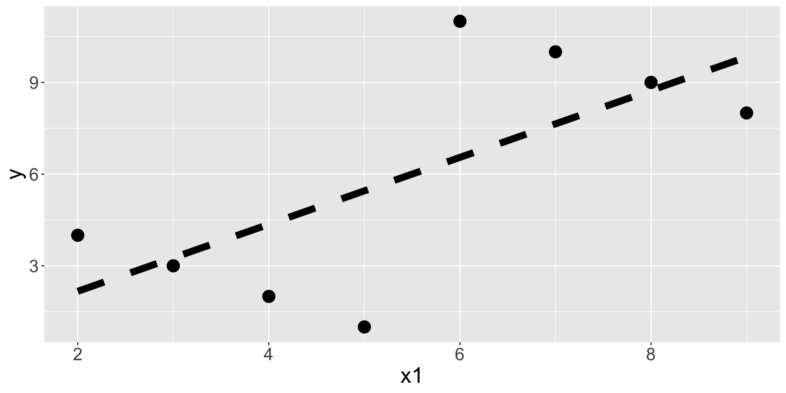
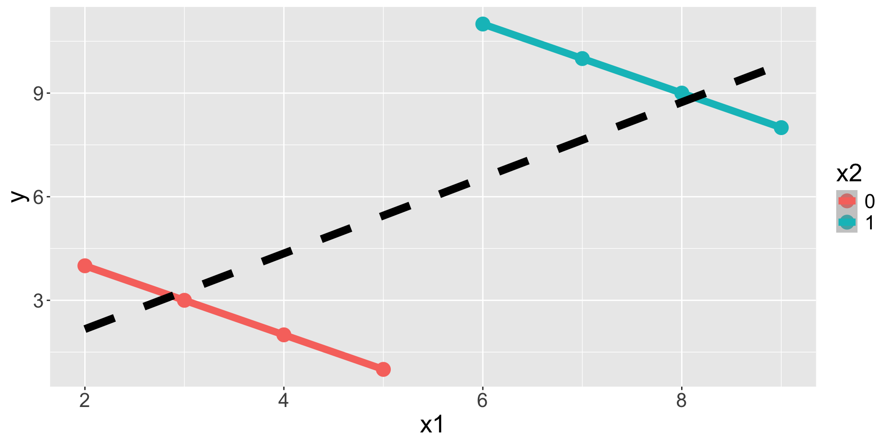

2025-10-02
What are the differences between observational studies and experimental studies?
What is a confounding variable?
Observational study on sex bias based on Fall 1973 admissions data to the graduate program at the University of California, Berkeley
| Admit | Deny | Total | |
|---|---|---|---|
| Men | 3738 | 4704 | 8442 |
| Women | 1494 | 2827 | 4321 |
| Total | 5232 | 7531 | 12763 |
What is the probability* of admission for a randomly selected applicant?
What is the probability of admission among men? Among women?
Are the probabilities you found marginal, joint, or conditional probabilities?
Suppose we want to understand the relationship between gender and admission decision. What sort of visualization might be appropriate for representing this data?

An application of probability!
We have more nuanced data about the graduate admissions: we know the department that each person was applied to.
We will consider the six largest departments: A, B, C, D, E, F
What sort of EDA would be interesting/appropriate for these data?
Number of applicants by department:
Female applicants:
| Dept | n |
|---|---|
| A | 108 |
| B | 25 |
| C | 593 |
| D | 375 |
| E | 393 |
| F | 341 |
Male applicants:
| Dept | n |
|---|---|
| A | 825 |
| B | 560 |
| C | 325 |
| D | 417 |
| E | 191 |
| F | 373 |
Number of applicants by department and admission status:
Female applicants:
| Dept | Decision | n |
|---|---|---|
| A | Admit | 89 |
| A | Reject | 19 |
| B | Admit | 17 |
| B | Reject | 8 |
| C | Admit | 202 |
| C | Reject | 391 |
| D | Admit | 131 |
| D | Reject | 244 |
| E | Admit | 94 |
| E | Reject | 299 |
| F | Admit | 24 |
| F | Reject | 317 |
Male applicants:
| Dept | Decision | n |
|---|---|---|
| A | Admit | 512 |
| A | Reject | 313 |
| B | Admit | 353 |
| B | Reject | 207 |
| C | Admit | 120 |
| C | Reject | 205 |
| D | Admit | 138 |
| D | Reject | 279 |
| E | Admit | 53 |
| E | Reject | 138 |
| F | Admit | 22 |
| F | Reject | 351 |
Can visualize three categorical variables at once!

Probability of admission conditioning on gender and department:
| Dept | Gender | cond_prob_admit |
|---|---|---|
| A | Female | 0.82 |
| A | Male | 0.62 |
| B | Female | 0.68 |
| B | Male | 0.63 |
| C | Female | 0.34 |
| C | Male | 0.37 |
| D | Female | 0.35 |
| D | Male | 0.33 |
| E | Female | 0.24 |
| E | Male | 0.28 |
| F | Female | 0.07 |
| F | Male | 0.06 |
But wait… didn’t we start by noting that men were way more likely to be admitted than women?
The first two departments (A and B) are easy to get into
The following table shows for each gender, the proportion of applicants each department received.
| Gender | Dept | cond_prop |
|---|---|---|
| Female | A | 0.059 |
| Female | B | 0.014 |
| Female | C | 0.323 |
| Female | D | 0.204 |
| Female | E | 0.214 |
| Female | F | 0.186 |
| Male | A | 0.307 |
| Male | B | 0.208 |
| Male | C | 0.121 |
| Male | D | 0.155 |
| Male | E | 0.071 |
| Male | F | 0.139 |
What do you notice?
The UC Berkeley admissions observational study is an example of Simpson’s paradox: when omitting one explanatory variable causes the measure/degree of association between another explanatory variable and a response variable to reverse or disappear


Using wrangling to obtain probabilities
case_when() to create more complex categorical variables
What is the probability that someone was admitted?
What is the probability that someone was admitted, conditioned on gender?
Suppose I want to create a new variable called Dept2 that takes the values:
# A tibble: 5 × 4
Decision Gender Dept Dept2
<chr> <chr> <chr> <chr>
1 Reject Female C Group 2
2 Admit Male A Group 1
3 Reject Female E Group 3
4 Reject Male B Group 1
5 Reject Female C Group 2We will use the case_when() function which generalizes if_else(). We use the following notation: <logical condition> ~ <value of variable>. Different “ifs” are separated by commas, and the logical conditions are checked sequentially.
# A tibble: 5 × 4
Decision Gender Dept Dept2
<chr> <chr> <chr> <chr>
1 Reject Female C Group 2
2 Admit Male A Group 1
3 Reject Female E Group 3
4 Reject Male B Group 1
5 Reject Female C Group 2# A tibble: 5 × 4
Decision Gender Dept Dept2
<chr> <chr> <chr> <chr>
1 Reject Female C Group 2
2 Admit Male A Group 1
3 Reject Female E Group 3
4 Reject Male B Group 1
5 Reject Female C Group 2kable()When we finish wrangling, the output is always a data frame
While this is so useful for coding, it’s not the most beautiful when rendering!
How can we make turn the data frame into a beautiful table?
We will need to first install the kableExtra library.